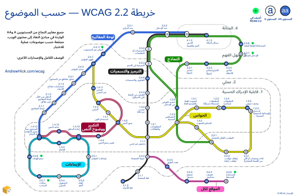

This is an extract of the Arabic WCAG map page. Copy and paste the version-controlled section into the main page HTML file.
↓ START OF CODE TO COPY ↓
خريطة مترو WCAG
تجمع هذه الخريطة جميع معايير النجاح من مبادئ النفاذ إلى محتوى الويب (WCAG) حسب الموضوع، للإصدار 2.2 والمستويين A وAA.
وتوضح الروابط العملية بين المعايير، والتي قد لا تكون ظاهرة من أسماء الإرشادات وحدها. فعلى سبيل المثال، توجد جميع المعايير التي يمكن اختبارها باستخدام لوحة المفاتيح على خط واحد.
الخريطة
الخريطة متاحة بصيغة SVG (رسوميات متجهية قابلة للتحجيم)، ويمكن أيضًا عرض كود الخريطة على GitHub.

الوصف
تشبه الخريطة خريطة قطار أنفاق، وتعرض 55 معيار نجاح كمحطات موزعة على 7 خطوط.
يوضح رمز كل محطة ما إذا كان معيار النجاح من المستوى A أو AA. وتمثل مبادئ WCAG الأربعة مناطق تمتد من المركز إلى الخارج باستخدام خطوط منقطة:
- 1.x.x — قابلية الإدراك الحسية (الأقرب إلى المركز)
- 2.x.x — عملي
- 3.x.x — سهل الفهم
- 4.x.x — المتانة (الأبعد عن المركز)
يُشرح كل خط بالتفصيل في الأقسام التالية. وقد بُسّطت أسماء بعض معايير النجاح قليلًا بما يناسب سياق خريطة المستوى AA.
يعرض الشعار المصغر في الخريطة شكلين تجريديين للحرفين W وM (إشارة إلى “WCAG metro”)، مكوّنين من أقواس متقاطعة ومستوحَيين جزئيًا من مترو طوكيو.
لوحة المفاتيح
تساعد هذه المعايير على ضمان عمل الوظائف بصورة متوقعة باستخدام لوحة المفاتيح، مع ظهور حالة التركيز بوضوح.
الخط أزرق متصل، ويمتد من الغرب إلى الشمال.
| الرقم | معيار النجاح | المستوى | التقاطعات |
|---|---|---|---|
| 1.4.13 | المحتوى عند تمرير المؤشر أو التركيز | AA | |
| 2.1.1 | لوحة المفاتيح | A | لا يوجد |
| 2.1.2 | التنقل من خلال لوحة المفاتيح دون عوائق | A | لا يوجد |
| 2.1.4 | اختصارات مفتاح الأحرف | A | لا يوجد |
| 2.4.1 | تجاوز مقاطع من المحتوى | A | لا يوجد |
| 2.4.3 | مسار المؤشر | A | لا يوجد |
| 2.4.7 | ظهور المؤشر | AA | |
| 2.4.11 | التركيز غير المحجوب جديد | AA | لا يوجد |
| 3.2.1 | عند التركيز | A | لا يوجد |
| 3.2.2 | عند الإدخال | A | |
| 4.1.2 | الاسم والدور والقيمة | A |
التكبير ووضوح النص
تساعد هذه المعايير على ضمان بقاء النص واضحًا عند التكبير أو تغيير التباعد، وأن يكون نصًا حقيقيًا لا صورة نص فقط، وأن يمكن التحكم في المحتوى الذي يظهر عند تمرير المؤشر أو التركيز.
الخط أحمر داكن وداخله خطان أبيضان، ويمتد غربًا من الجهة الغربية لمركز الخريطة.
| الرقم | معيار النجاح | المستوى | التقاطعات |
|---|---|---|---|
| 1.4.3 | التباين | AA | |
| 1.4.5 | صور النص | AA | |
| 1.4.4 | تغيير حجم النص | AA | لا يوجد |
| 1.4.10 | إعادة التدفق | AA | |
| 1.4.12 | تباعد النص | AA | لا يوجد |
| 1.4.13 | المحتوى عند تمرير المؤشر أو التركيز | AA |
الحواس
تساعد هذه المعايير على ألا يعتمد المحتوى على حاسة بعينها، وذلك بتوفير تباين كافٍ، وعدم الاعتماد على الرؤية أو اللون أو السمع أو التوقيت وحدها، وتجنب المشتتات الصوتية أو المرئية.
الخط أصفر بحد أسود. ويمتد أساسًا من الشمال الغربي إلى الشرق، ثم يلتف عائدًا على نفسه بدءًا من الخصائص الحسية.
| الرقم | معيار النجاح | المستوى | التقاطعات |
|---|---|---|---|
| 2.4.7 | ظهور المؤشر | AA | |
| 1.4.11 | التباين غير النصي | AA | لا يوجد |
| 1.4.3 | التباين | AA | |
| 1.4.1 | استخدام اللون | A | لا يوجد |
| 1.4.5 | صور النص | AA | |
| 1.1.1 | محتوى غير نصي | A | |
| 1.3.3 | الخصائص الحسية | A | |
| 1.2.1 | الصوت فقط والفيديو فقط | A | لا يوجد |
| 1.2.2 | التعليقات (مسجلة مسبقًا) | A | لا يوجد |
| 1.2.4 | التعليقات (مباشر) | AA | لا يوجد |
| 1.2.5 | وصف صوتي | AA | لا يوجد |
| 1.2.3 | وصف صوتي أو بديل للوسائط السمعية البصرية | A | لا يوجد |
| 1.4.2 | التحكم بالصوت | A | لا يوجد |
| 2.2.1 | التوقيت القابل للتعديل | A | |
| 2.2.2 | إيقاف مؤقت، توقف، إخفاء | A | لا يوجد |
| 2.3.1 | ثلاث ومضات أو أقل من القيمة المعيارية | A | لا يوجد |
الترميز والتسميات
تساعد هذه المعايير على جعل المحتوى متوافقًا مع التقنيات المساعدة عبر ترميزه بما يتسق مع تمثيله المرئي وتوفير التسميات المناسبة. وللنماذج مجموعة إضافية من المعايير.
الخط أسود بحد أبيض، ويمتد أساسًا من الجنوب إلى الشمال.
| الرقم | معيار النجاح | المستوى | التقاطعات |
|---|---|---|---|
| 3.1.2 | لغة الأجزاء | AA | لا يوجد |
| 3.1.1 | لغة الصفحة | A | لا يوجد |
| 2.4.2 | عنونة الصفحة | A | |
| 1.1.1 | محتوى غير نصي | A | |
| 1.3.1 | المعلومات والعلاقات | A | لا يوجد |
| 1.3.2 | ترتيب ذو دلالة | A | لا يوجد |
| 2.4.4 | الغرض من الرابط (في السياق) | A | لا يوجد |
| 2.4.6 | العناوين والتسميات | AA | لا يوجد |
| 2.5.3 | التسمية في الاسم | A | |
| 3.3.2 | التسميات أو التعليمات | A | |
| 3.2.2 | عند الإدخال | A | |
| 4.1.2 | الاسم والدور والقيمة | A | |
| 4.1.3 | رسائل الحالة | AA |
النماذج
تساعد هذه المعايير على توفير نماذج قابلة للاستخدام من خلال عدم الاعتماد على التوقيت أو التعليمات الحسية، وتوفير تعليمات ورسائل خطأ مناسبة، ودعم التقنيات المساعدة، وتسهيل تسجيل الدخول وإكمال النماذج.
الخط أخضر وداخله خط أبيض واحد. ويمتد أساسًا من شرق المركز إلى الشمال، ثم يلتف عائدًا على نفسه بدءًا من تحديد الغرض من الإدخال.
| الرقم | معيار النجاح | المستوى | التقاطعات |
|---|---|---|---|
| 2.2.1 | التوقيت القابل للتعديل | A | |
| 1.3.3 | الخصائص الحسية | A | |
| 1.3.5 | تحديد الغرض من الإدخال | AA | لا يوجد |
| 2.5.3 | التسمية في الاسم | A | |
| 3.3.2 | التسميات أو التعليمات | A | |
| 3.2.2 | عند الإدخال | A | |
| 4.1.2 | الاسم والدور والقيمة | A | |
| 4.1.3 | رسائل الحالة | AA | |
| 3.3.1 | تحديد الخطأ | A | لا يوجد |
| 3.3.3 | اقتراح إصلاح الخطأ | AA | لا يوجد |
| 3.3.4 | تفادي الأخطاء | AA | لا يوجد |
| 3.3.7 | الإدخال المتكرر جديد | A | لا يوجد |
| 3.3.8 | المصادقة القابلة للنفاذ جديد | AA | لا يوجد |
الإيماءات
تساعد هذه المعايير على ضمان ألا تعتمد الوظائف على الإيماءات أو السحب أو الحركة، وأن تعمل على الشاشات الصغيرة بالاتجاهين الرأسي والأفقي، وأن تقلل خطر تفعيل إجراء غير مقصود.
الخط سماوي بحد أسود وخط أسود داخلي، ويشكّل حلقة في الجنوب الغربي.
| الرقم | معيار النجاح | المستوى | التقاطعات |
|---|---|---|---|
| 1.4.13 | المحتوى عند تمرير المؤشر أو التركيز | AA | |
| 1.3.4 | الاتجاه | AA | لا يوجد |
| 1.4.10 | إعادة التدفق | AA | |
| 2.5.1 | إيماءات المؤشر | A | لا يوجد |
| 2.5.2 | إلغاء النقر | A | لا يوجد |
| 2.5.4 | التشغيل الحركي | A | لا يوجد |
| 2.5.7 | حركات السحب جديد | AA | لا يوجد |
| 2.5.8 | حجم الهدف جديد | AA | لا يوجد |
الموقع ككل
يجب اختبار هذه المعايير عبر الموقع ككل للتأكد من ظهور الأسماء والقوائم وآليات المساعدة بصورة متسقة، ووجود عناوين ذات معنى للصفحات، ووجود أكثر من طريقة للوصول إلى كل صفحة.
الخط وردي وداخله خطان أسودان، ويمتد من الجنوب إلى الجنوب الشرقي.
| الرقم | معيار النجاح | المستوى | التقاطعات |
|---|---|---|---|
| 2.4.2 | عنونة الصفحة | A | |
| 2.4.5 | تعدد الطرق | AA | لا يوجد |
| 3.2.3 | تصفح متسق | AA | لا يوجد |
| 3.2.4 | تعريف متناسق | AA | لا يوجد |
| 3.2.6 | المساعدة المتسقة جديد | A | لا يوجد |
الشكر
شكرًا لكل من ساهم في تطوير خريطة WCAG وترجماتها. يمكن العثور على قائمة الشكر والنسخ البديلة الكاملة في صفحة الخريطة الإنجليزية الرئيسية.
الترخيص
هذا العمل مرخّص بموجب CC BY-NC 4.0.
يمكن استخدام الخريطة أو تكييفها مع الالتزام بإضافة الإسناد، ومشاركة النسخة أو إعادة العمل عليها بصورة قابلة للنفاذ، وطلب الإذن قبل الاستخدام التجاري.
↑ END OF CODE TO COPY ↑